Kronikarz Kresów Wschodnich
Syn Ziemi Wileńskiej, wygnany przez historię, osiadły na Warmii — całe życie poświęcił upamiętnieniu losów Polaków z Kresów Wschodnich. Jego słowa to testament dla przyszłych pokoleń.
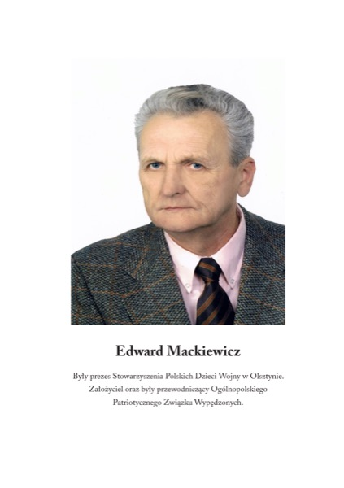
Edward Mackiewicz urodził się na Ziemi Wileńskiej, w rodzinie szlacheckiej pieczętującej się herbem Lubicz Boża Wola — jednego z najstarszych kresowych rodów rycerskich. Dzieciństwo spędził w cieniu II wojny światowej, dorastając w atmosferze polskości, patriotyzmu i głębokiej więzi z ziemią przodków.
W 1946 roku historia brutalnie oderwała go od rodzinnych stron. Wraz z matką i siostrą został wywieziony pociągiem towarowym z ukochanej Wileńszczyzny. Zamiast do Poznania — jak zapowiadano — trafił do Olsztyna, gdzie z „repatriantem" stał się Warmiakiem z nadania Stalina i Churchilla.
Przez dziesięciolecia Edward Mackiewicz działał społecznie na rzecz uchodźców i wypędzonych z Kresów. Był prezesem Stowarzyszenia Polskich Dzieci Wojny w Olsztynie oraz założycielem i przewodniczącym Ogólnopolskiego Patriotycznego Związku Wypędzonych. Osiadł w Dywitach pod Olsztynem, gdzie prowadzi swoje wydawnictwo „Virtuti Militari".
Piszę, bo naród który traci pamięć — traci życie. Ta myśl przewija się przez wszystkie jego książki — świadectwa polskiego losu, które nie pozwalają zapomnieć o ludziach i miejscach pochłoniętych przez historię.
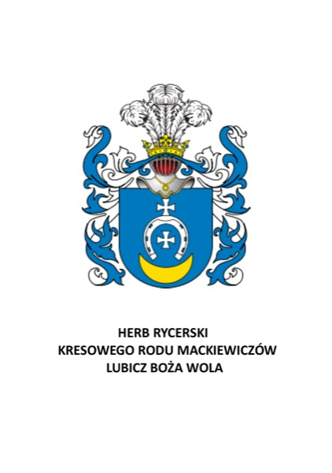
Granice państw przesuwają się i zmieniają, ale prawdziwe są zawsze słowa, że ojczyzna to ziemia i groby. Jak długo trwa pamięć o grobach, tak długo trwa siła związku z ojczyzną.
Każda z tych książek to osobista misja — ocalenie od zapomnienia ludzi, miejsc i wydarzeń, które ukształtowały polską tożsamość.
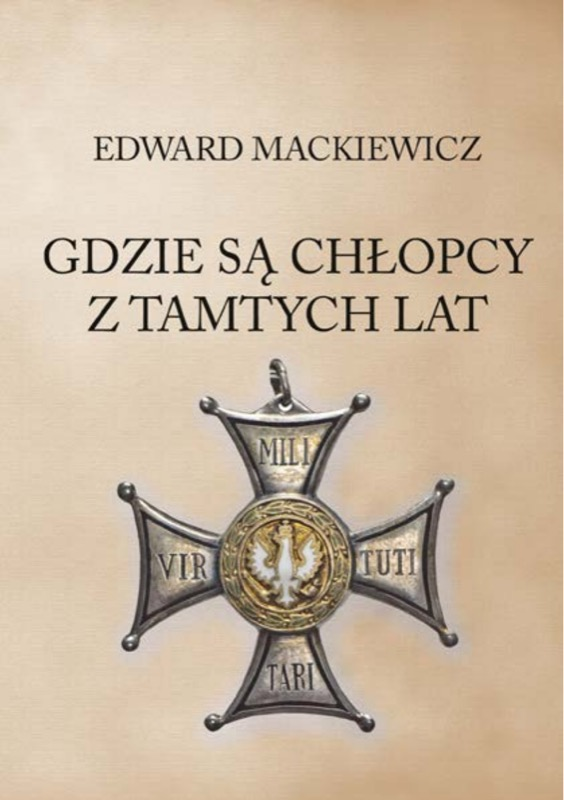
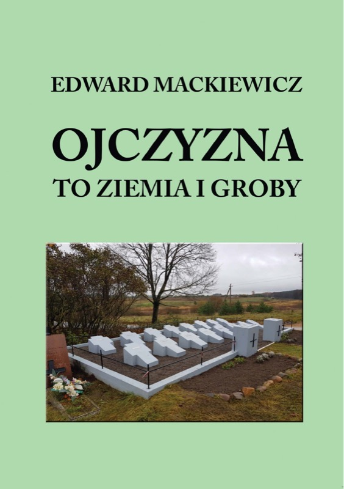
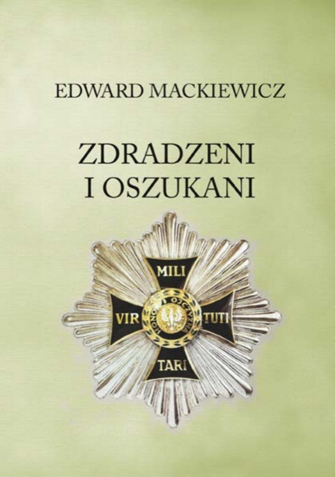
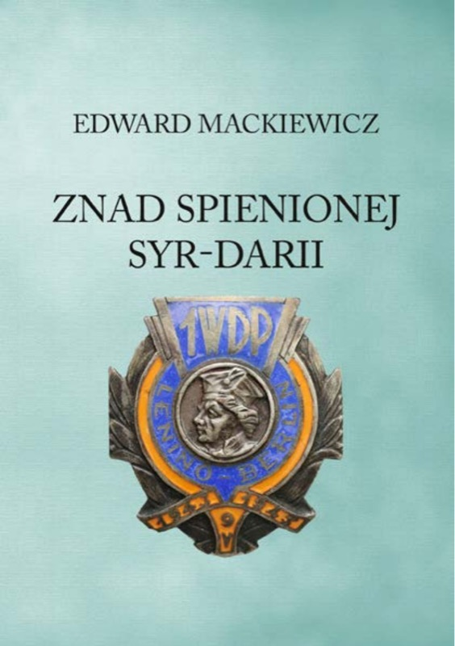
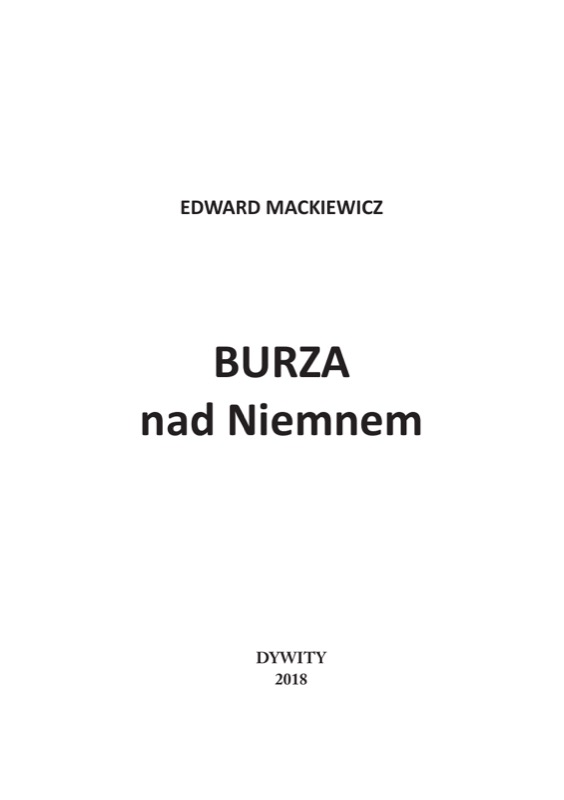
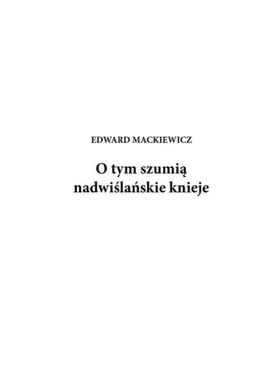
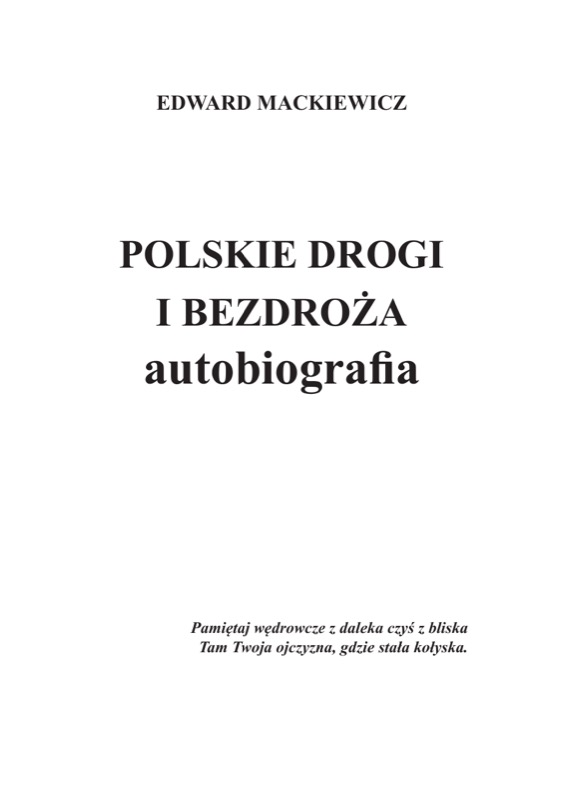
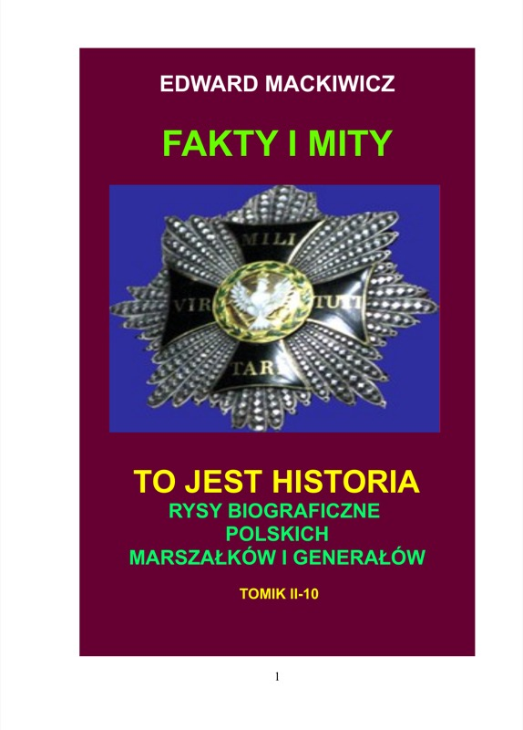
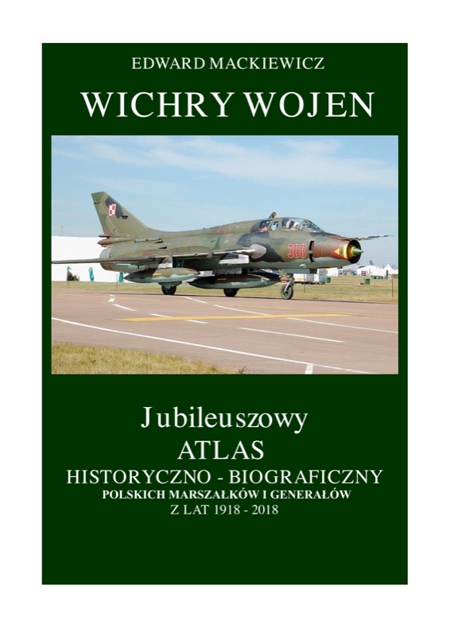